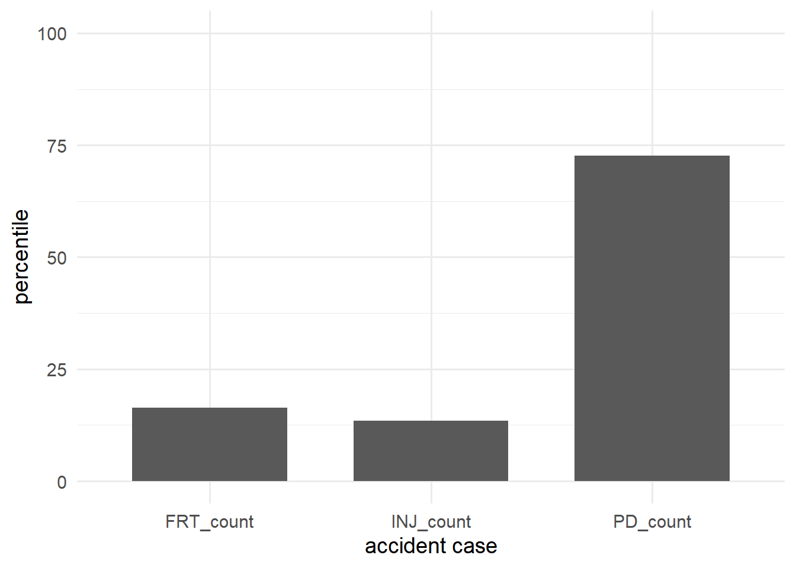

Analysis of Motor Vehicle Collision in Toronto
Abstract
Car Accidents are fatal yet common. This paper examines Motor Vehicle Collision (MVC) occurrences and their changes from January, 2014 to June, 2022 in Toronto
1. Introduction
Motor vehicle is one of the essential asset for modern day people. Its capacity and speed allowed faster shipment and displacement in larger scale than anytime before. However, it also created public safety issue in every alley of the city.
In this paper, I used R(R Core Team 2022) to analyze data on Motor Vehicle Collision (MVC) from opendatatoronto(Gelfand 2022) using dplyr(Wickham et al. 2022) and tidyverse(Wickham et al. 2019) packages. The purpose of this paper is to get better understanding on how tendency of car accident has changed over a time. The analyzed data contains how many car accident has occured each year within the period of data collection (Figure 1) and focuses on the seriousness of the accidents (@tbl-serious).
Quarto enables you to weave together content and executable code into a finished document. To learn more about Quarto see https://quarto.org.
Running Code
When you click the Render button a document will be generated that includes both content and the output of embedded code. You can embed code like this:
You can add options to executable code like this
[1] 4{#tbl-serious}
The echo: false option disables the printing of code (only output is displayed).
References
Gelfand, Sharla. 2022. Opendatatoronto: Access the City of Toronto Open Data Portal. https://CRAN.R-project.org/package=opendatatoronto.
R Core Team. 2022. R: A Language and Environment for Statistical Computing. Vienna, Austria: R Foundation for Statistical Computing. https://www.R-project.org/.
Wickham, Hadley, Mara Averick, Jennifer Bryan, Winston Chang, Lucy D’Agostino McGowan, Romain François, Garrett Grolemund, et al. 2019. “Welcome to the tidyverse.” Journal of Open Source Software 4 (43): 1686. https://doi.org/10.21105/joss.01686.
Wickham, Hadley, Romain François, Lionel Henry, and Kirill Müller. 2022. Dplyr: A Grammar of Data Manipulation. https://CRAN.R-project.org/package=dplyr.